Selina Baldauf
2022-09-28
*.Rproj fileProject
|
|- data
|
|- documents
| |
| |- notes
| |
| |- reports
|
|- analysis
| |
| |- clean_data.R
| |
| |- statistics.R
|
|- *.RProjMain advantages of R Studio projects
File pane)Project
|
|- data
|
|- documents
| |
| |- notes
| |
| |- reports
|
|- analysis
| |
| |- clean_data.R
| |
| |- statistics.R
|
|- *.RProjThis means no more setwd()!
Create a project from scratch:
File -> New Project -> New Directory -> New ProjectCreate ProjectR Studio will now create and open the project for you.
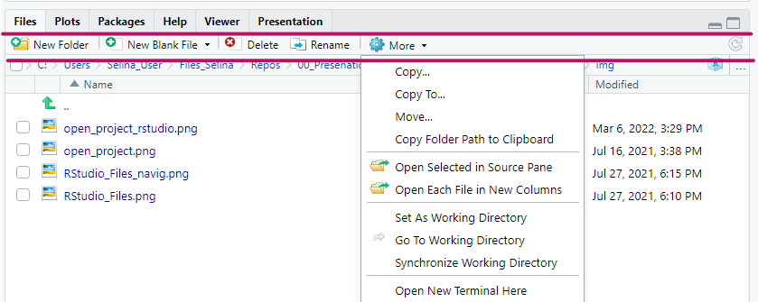
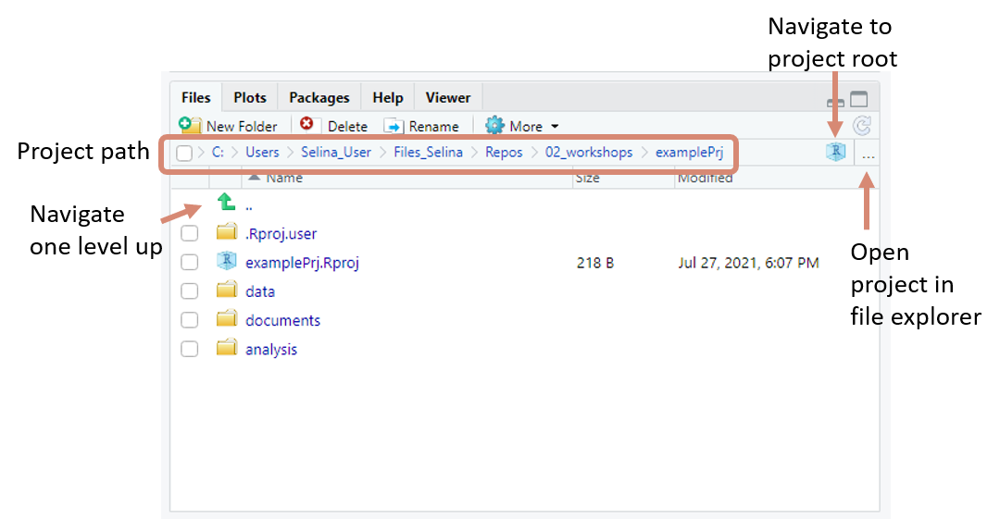
Click on the project symbol on the top right of R Studio and select the project from the list.
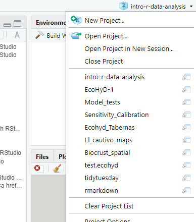
Just click on the .Rproj file in the folder and R Studio opens the project.
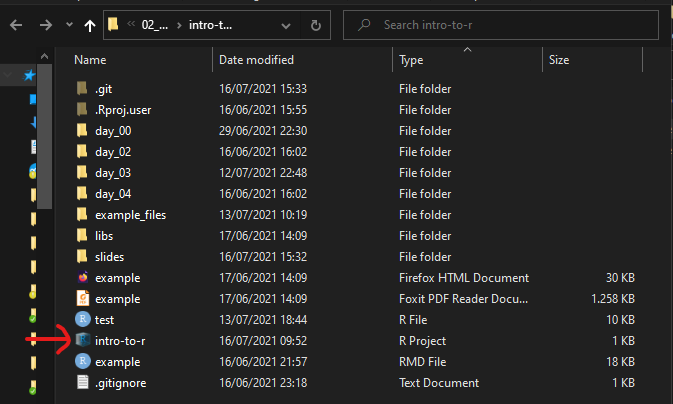
Consistent and good practice coding style is important especially if you share your code with other people.
Use white space around operators, =, <-, …
Limit the width of a line of code and start a new line regularly. A standard is 80 characters.
Instead of this:
Some R Studio settings help you with keeping the good practice.
RStudio can let you know in the side bar, if you are missing white space that is recommended.
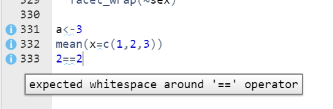
Tools -> Global Options -> Code -> Diagnostics -> Provide R style diagnostics
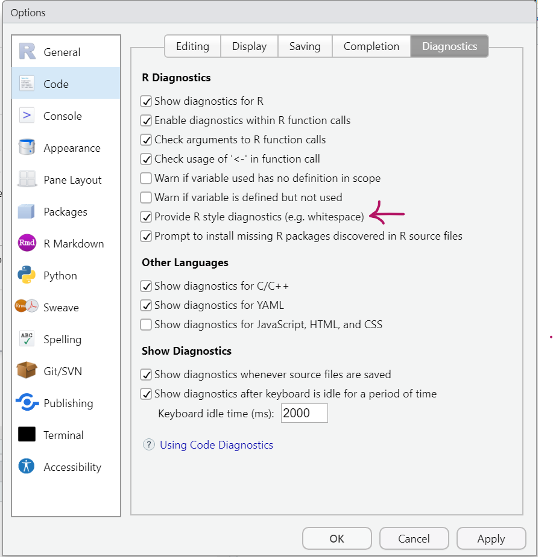
There is a setting in RStudio that helps you with this. It puts a very thin, vertical line into each of your scripts to show you where you should better start a new line. To turn this on go to Tools -> Global Options -> Code -> Display, put a checkmark for Show margin
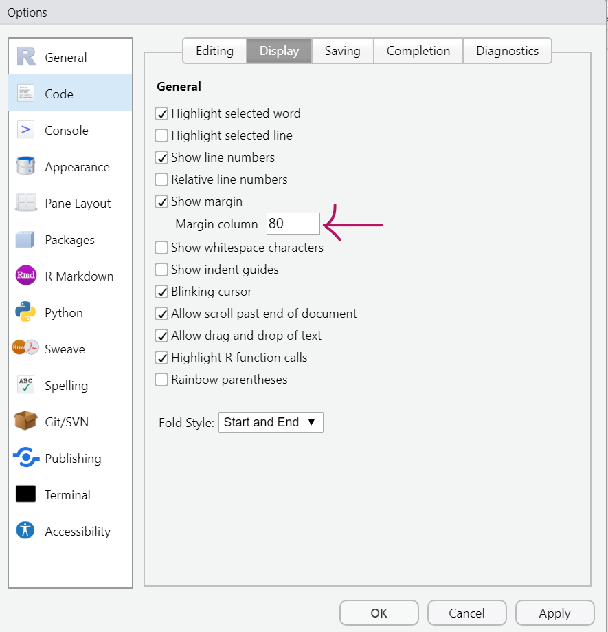
stylerPackage adds an Addin to R Studio and lets you style your code automatically.1
Step 2: Use Addin to style your code
Look for the Styler sections of Addins (top of R Studio):
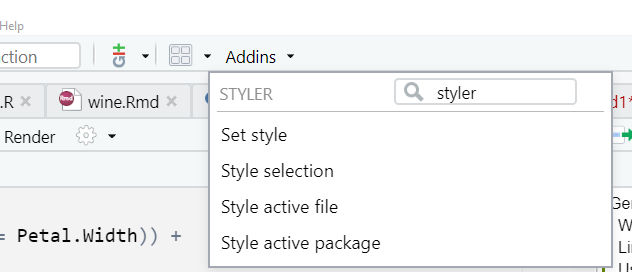
Style selection: highlight code (always an entire section of code, not just a small part) and highlighted section will be automatically styled for you.
Style active file: Currently opened R file will be styled automatically.
stylerStep 3: Set keyboard shortcut
Tools -> Modify Keyboard Shortcuts.styleMy keyboard shortcuts e.g. look like this:
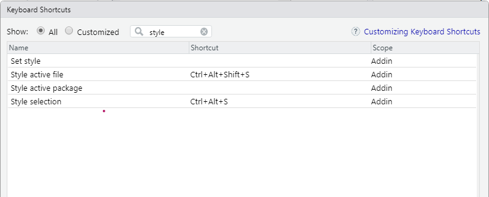
Insert section headers into your code using the keyboard shortcut Ctrl/Cmd + Shift + R
usethis
usethisGreat workflow package1 for
usethisSome examples that I find useful
My profile e.g. looks like this:
if (interactive()) {
suppressMessages(require(devtools))
suppressMessages(require(usethis))
suppressMessages(require(reprex))
}
options(
## RCompendium Credentials ----
given = "Selina",
family = "Baldauf",
email = "selina.baldauf@fu-berlin.de",
usethis.full_name = "Selina Baldauf",
usethis.protocol = "ssh",
usethis.description = list(
"Authors@R" = utils::person(
"Selina", "Baldauf",
email = "selina.baldauf@fu-berlin.de",
role = c("aut", "cre")
),
Version = "0.0.0.9000"
),
reprex.show = FALSE,
reprex.advertise = FALSE,
reprex.style = TRUE
)There are a lot of useful option in R Studio. It makes sense to look through all of them to see what is available.
Find some ideas and remarks on the next slides.
Find global options via Tools -> Global Options
Turn on some code diagnostic options so R Studio warns you in the side bar if there is a problem with your code.
Code -> Diagnostics
Here is my setup as an example:
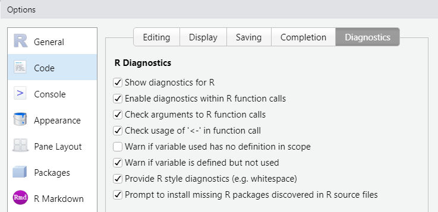Code -> Display -> Rainbow Parentheses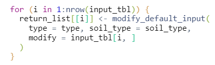 # What are your favorite tips and tricks? {background-color=‘#562457’}